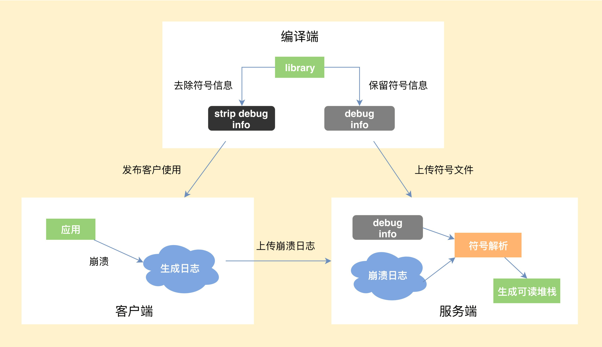

在各种场合遇到其他产品的开发人员时，大家总忍不住想在技术上切磋两招。第一句问的通常都是“你们产品的崩溃率是多少？”
程序员 A 自豪地说： “百分之一。”
旁边的程序员 B 鄙视地看了一眼，然后喊到： “千分之一！”
“万分之一” ，程序员 C 说完之后全场变得安静起来。
崩溃率是衡量一个应用质量高低的基本指标，这一点是你我都比较认可的。不过你说的“万分之一”就一定要比我说的“百分之一” 更好吗？我觉得，这个问题其实并不仅仅是比较两个数值这么简单。
今天我们就来聊一聊有关“崩溃”的那些事，我会从 Android 的两种崩溃类型谈起，再和你进一步讨论到底该怎样客观地衡量崩溃这个指标，以及又该如何看待和崩溃相关的稳定性。
Android 的两种崩溃
我们都知道，Android 崩溃分为 Java 崩溃和 Native 崩溃。
简单来说，Java 崩溃就是在 Java 代码中，出现了未捕获异常，导致程序异常退出。那 Native 崩溃又是怎么产生的呢？一般都是因为在 Native 代码中访问非法地址，也可能是地址对齐出现了问题，或者发生了程序主动 abort，这些都会产生相应的 signal 信号，导致程序异常退出。
所以，“崩溃”就是程序出现异常，而一个产品的崩溃率，跟我们如何捕获、处理这些异常有比较大的关系。Java 崩溃的捕获比较简单，但是很多同学对于如何捕获 Native 崩溃还是一知半解，下面我就重点介绍 Native 崩溃的捕获流程和难点。
1.Native 崩溃的捕获流程
如果你对 Native 崩溃机制的一些基本知识还不是很熟悉，建议你阅读一下《Android 平台 Native 代码的崩溃捕获机制及实现》。这里我着重给你讲讲一个完整的 Native 崩溃从捕获到解析要经历哪些流程。
-
编译端。编译 C/C++ 代码时，需要将带符号信息的文件保留下来。
-
客户端。捕获到崩溃时候，将收集到尽可能多的有用信息写入日志文件，然后选择合适的时机上传到服务器。
-
服务端。读取客户端上报的日志文件，寻找适合的符号文件，生成可读的 C/C++ 调用栈。

2.Native 崩溃捕获的难点
Chromium 的Breakpad是目前 Native 崩溃捕获中最成熟的方案，但很多人都觉得 Breakpad 过于复杂。其实我认为 Native 崩溃捕获这个事情本来就不容易，跟当初设计 Tinker 的时候一样，如果只想在 90% 的情况可靠，那大部分的代码的确可以砍掉；但如果想达到 99%，在各种恶劣条件下依然可靠，后面付出的努力会远远高于前期。
所以在上面的三个流程中，最核心的是怎么样保证客户端在各种极端情况下依然可以生成崩溃日志。因为在崩溃时，程序会处于一个不安全的状态，如果处理不当，非常容易发生二次崩溃。
那么，生成崩溃日志时会有哪些比较棘手的情况呢？
情况一：文件句柄泄漏，导致创建日志文件失败，怎么办？
应对方式：我们需要提前申请文件句柄 fd 预留，防止出现这种情况。
情况二：因为栈溢出了，导致日志生成失败，怎么办？
应对方式：为了防止栈溢出导致进程没有空间创建调用栈执行处理函数，我们通常会使用常见的 signalstack。在一些特殊情况，我们可能还需要直接替换当前栈，所以这里也需要在堆中预留部分空间。
情况三：整个堆的内存都耗尽了，导致日志生成失败，怎么办？
应对方式：这个时候我们无法安全地分配内存，也不敢使用 stl 或者 libc 的函数，因为它们内部实现会分配堆内存。这个时候如果继续分配内存，会导致出现堆破坏或者二次崩溃的情况。Breakpad 做的比较彻底，重新封装了Linux Syscall Support，来避免直接调用 libc。
情况四：堆破坏或二次崩溃导致日志生成失败，怎么办？
应对方式：Breakpad 会从原进程 fork 出子进程去收集崩溃现场，此外涉及与 Java 相关的，一般也会用子进程去操作。这样即使出现二次崩溃，只是这部分的信息丢失，我们的父进程后面还可以继续获取其他的信息。在一些特殊的情况，我们还可能需要从子进程 fork 出孙进程。
当然 Breakpad 也存在着一些问题，例如生成的 minidump 文件是二进制格式的，包含了太多不重要的信息，导致文件很容易达到几 MB。但是 minidump 也不是毫无用处，它有一些比较高级的特性，比如使用 gdb 调试、可以看到传入参数等。Chromium 未来计划使用 Crashpad 全面替代 Breakpad，但目前来说还是 “too early to mobile”。
我们有时候想遵循 Android 的文本格式，并且添加更多我们认为重要的信息，这个时候就要去改造 Breakpad 的实现。比较常见的例如增加 Logcat 信息、Java 调用栈信息以及崩溃时的其他一些有用信息，在下一节我们会有更加详细的介绍。
如果想彻底弄清楚 Native 崩溃捕获，需要我们对虚拟机运行、汇编这些内功有一定造诣。做一个高可用的崩溃收集 SDK 真的不是那么容易，它需要经过多年的技术积累，要考虑的细节也非常多，每一个失败路径或者二次崩溃场景都要有应对措施或备用方案。
3. 选择合适的崩溃服务
对于很多中小型公司来说，我并不建议自己去实现一套如此复杂的系统，可以选择一些第三方的服务。目前各种平台也是百花齐放，包括腾讯的Bugly、阿里的啄木鸟平台、网易云捕、Google 的 Firebase 等等。
当然，在平台的选择方面，我认为，从产品化跟社区维护来说，Bugly 在国内做的最好；从技术深度跟捕获能力来说，阿里 UC 浏览器内核团队打造的啄木鸟平台最佳。
如何客观地衡量崩溃
对崩溃有了更多了解以后，我们怎样才能客观地衡量崩溃呢？
要衡量一个指标，首先要统一计算口径。如果想评估崩溃造成的用户影响范围，我们会先去看UV 崩溃率。
UV 崩溃率 = 发生崩溃的 UV / 登录 UV只要用户出现过一次崩溃就会被计算到，所以 UV 崩溃率的高低会跟应用的使用时长有比较大的关系，这也是微信 UV 崩溃率在业界不算低的原因（强行甩锅）。当然这个时候，我们还可以去看应用 PV 崩溃率、启动崩溃率、重复崩溃率这些指标，计算方法都大同小异。
这里为什么要单独统计启动崩溃率呢？因为启动崩溃对用户带来的伤害最大，应用无法启动往往通过热修复也无法拯救。闪屏广告、运营活动，很多应用启动过程异常复杂，又涉及各种资源、配置下发，极其容易出现问题。微信读书、蘑菇街、淘宝、天猫这些“重运营”的应用都有使用一种叫作“安全模式”的技术来保障客户端的启动流程，在监控到客户端启动失败后，给用户自救的机会。
现在回到文章开头程序员“华山论剑”的小故事，我来揭秘他们解决崩溃率的“独家秘笈”。
程序员 B 对所有线程、任务都封装了一层 try catch，“消化”掉了所有 Java 崩溃。至于程序是否会出现其他异常表现，这是上帝要管的事情，反正我是实现了“千分之一”的目标。
程序员 C 认为 Native 崩溃太难解决，所以他想了一个“好方法”，就是不采集所有的 Native 崩溃，美滋滋地跟老板汇报“万分之一”的工作成果。
了解了美好数字产生的“秘笈”后，不知道你有何感想？其实程序员 B 和 C 都是真实的案例，而且他们的用户体量都还不算小。技术指标过于 KPI 化，是国内比较明显的一个现象。崩溃率只是一个数字，我们的出发点应该是让用户有更好的体验。
如何客观地衡量稳定性
到此，我们讨论了崩溃是怎么回事儿，以及怎么客观地衡量崩溃。那崩溃率是不是就能完全等价于应用的稳定性呢？答案是肯定不行。处理了崩溃，我们还会经常遇到 ANR（Application Not Responding，程序没有响应）这个问题。
出现 ANR 的时候，系统还会弹出对话框打断用户的操作，这是用户非常不能忍受的。这又带来另外一个问题，我们怎么去发现应用中的 ANR 异常呢？总结一下，通常有两种做法。
1. 使用 FileObserver 监听 /data/anr/traces.txt 的变化。非常不幸的是，很多高版本的 ROM，已经没有读取这个文件的权限了。这个时候你可能只能思考其他路径，海外可以使用 Google Play 服务，而国内微信利用Hardcoder框架（HC 框架是一套独立于安卓系统实现的通信框架，它让 App 和厂商 ROM 能够实时“对话”了，目标就是充分调度系统资源来提升 App 的运行速度和画质，切实提高大家的手机使用体验）向厂商获取了更大的权限。
2. 监控消息队列的运行时间。这个方案无法准确地判断是否真正出现了 ANR 异常，也无法得到完整的 ANR 日志。在我看来，更应该放到卡顿的性能范畴。
回想我当时在设计 Tinker 的时候，为了保证热修复不会影响应用的启动，Tinker 在补丁的加载流程也设计了简单的“安全模式”，在启动时会检查上次应用的退出类型，如果检查连续三次异常退出，将会自动清除补丁。所以除了常见的崩溃，还有一些会导致应用异常退出的情况。
在讨论什么是异常退出之前，我们先看看都有哪些应用退出的情形。
-
主动自杀。
Process.killProcess()、exit()等。 -
崩溃。出现了 Java 或 Native 崩溃。
-
系统重启；系统出现异常、断电、用户主动重启等，我们可以通过比较应用开机运行时间是否比之前记录的值更小。
-
被系统杀死。被 low memory killer 杀掉、从系统的任务管理器中划掉等。
-
ANR。
我们可以在应用启动的时候设定一个标志，在主动自杀或崩溃后更新标志，这样下次启动时通过检测这个标志就能确认运行期间是否发生过异常退出。对应上面的五种退出场景，我们排除掉主动自杀和崩溃（崩溃会单独的统计）这两种场景，希望可以监控到剩下三种的异常退出，理论上这个异常捕获机制是可以达到 100% 覆盖的。
通过这个异常退出的检测，可以反映如 ANR、low memory killer、系统强杀、死机、断电等其他无法正常捕获到的问题。当然异常率会存在一些误报，比如用户从系统的任务管理器中划掉应用。对于线上的大数据来说，还是可以帮助我们发现代码中的一些隐藏问题。
所以就得到了一个新的指标来衡量应用的稳定性，即异常率。
UV 异常率 = 发生异常退出或崩溃的 UV / 登录 UV前不久我们的一个应用灰度版本发现异常退出的比例增长不少，最后排查发现由于视频播放存在一个巨大 bug，会导致可能有用户手机卡死甚至重启，这是传统崩溃收集很难发现的问题。
根据应用的前后台状态，我们可以把异常退出分为前台异常退出和后台异常退出。“被系统杀死”是后台异常退出的主要原因，当然我们会更关注前台的异常退出的情况，这会跟 ANR、OOM 等异常情况有更大的关联。
通过异常率我们可以比较全面的评估应用的稳定性，对于线上监控还需要完善崩溃的报警机制。在微信我们可以做到 5 分钟级别的崩溃预警，确保能在第一时间发现线上重大问题，尽快决定是通过发版还是动态热修复解决问题。
总结
今天，我讲了 Android 的两种崩溃，重点介绍了 Native 崩溃的捕获流程和一些难点。做一个高可用的崩溃收集 SDK 并不容易，它背后涉及 Linux 信号处理以及内存分配、汇编等知识，当你内功修炼得越深厚，学习这些底层知识就越得心应手。
接着，我们讨论了崩溃率应该如何去计算，崩溃率的高低跟应用时长、复杂度、收集 SDK 有关。不仅仅是崩溃率，我们还学习了目前 ANR 采集的方式以及遇到的问题，最后提出了异常率这一个新的稳定性监控指标。
作为技术人员，我们不应该盲目追求崩溃率这一个数字，应该以用户体验为先，如果强行去掩盖一些问题往往更加适得其反。我们不应该随意使用 try catch 去隐藏真正的问题，要从源头入手，了解崩溃的本质原因，保证后面的运行流程。在解决崩溃的过程，也要做到由点到面，不能只针对这个崩溃去解决，而应该要考虑这一类崩溃怎么解决和预防。
崩溃的治理是一个长期的过程，在专栏下一期我会重点讲一些分析应用崩溃的方法论。另外，你如果细心的话，可以发现，在这篇文章里，我放了很多的超链接，后面的文章里也会有类似的情况。所以，这就要求你在读完文章之后，或者读的过程中，如果对相关的背景信息或者概念不理解，就需要花些时间阅读周边文章。当然，如果看完还是没有明白，你也可以在留言区给我留言。
课后作业
Breakpad是一个跨平台的开源项目，今天的课后作业是使用 Breakpad 来捕获一个 Native 崩溃，并在留言区写下你今天学习和练习后的总结与思考。
当然我在专栏 GitHub 的Group里也为你提供了一个Sample方便你练习，如果你没使用过 Breakpad 的话，只需要直接编译即可。希望你可以通过一个简单的 Native 崩溃捕获过程，完成 minidump 文件的生成和解析，在实践中加深对 Breakpad 工作机制的认识。
我要再次敲黑板划重点了，请你一定要坚持参与我们的课后练习，从最开始就养成学完后立马动手操作的好习惯，这样才能让学习效率最大化，一步步接近“成为高手”的目标。当然了，认真提交作业的同学还有机会获得学习加油礼包。接下来，就看你的了！
COMMUNITY NOTES
读者评论
关于x86模拟器下无法生成日志的问题是由于clang导致的，需要使用gcc编译，例子的readme里已经补上了解决方法
首先感谢下前面同学的优质评论，我遇到一些问题实在搞不定时候，参考评论解决了一些问题。以下是我具体遇到的一些问题，希望能够给用Ubuntu作为开发环境的同学一点帮助。PC操作系统：Ubuntu18.04 X64AS版本：3.1手机：华为V8 8.0系统遇到的问题：1. 导入项目编译不过：Build command failed.Error while executing process /home/jayden/Android/Sdk/cmake/3.6.4111459/bin/cmake with arguments {-H/mnt/D.....CMake Error: CMAKE_C_COMPILER not set, after EnableLanguageCMake Error: CMAKE_CXX_COMPILER not set, after EnableLanguage-- Configuring incomplete, errors occurred!解决方法：下载cmake 3.6对应的ndk版本，下载ndk12版本（ https://dl.google.com/android/repository/android-ndk-r12b-linux-x86_64.zip）解压到sdk路径下，并在local.properties配置上对应的ndk.dir路径。2. minidump_stackwalk dump对应的 crash文件时候，报错，如上老师说的，需要自己编译对应环境的源码，所以我选择下载https://github.com/google/breakpad里的depot_tools，然后make install出来自己用。也可以借鉴其他人下载缺失的头文件来编译github上的源码。3. addr2line的时候，报错 File format not recognized， Linux的话需要用aarch64-linux-android-4.9，而不是arm-linux-androideabi-4.9 。 ~/Android/Sdk/android-ndk-r12b/toolchains/aarch64-linux-android-4.9/prebuilt/linux-x86_64/bin/aarch64-linux-android-addr2line -f -C -e sample/build/intermediates/transforms/mergeJniLibs/debug/0/lib/arm64-v8a/libcrash-lib.so 0x5a0Crash()/mnt/Data/github/Geek_Android_Improve/Chapter01/sample/src/main/cpp/crash.cpp:10
虽然历经阻碍，最终没有 dump 成功，但可以给还没操作的同学一点建议1.最好自备梯子，导入工程会很顺利2.Smaple 里「补充内容」那几行代码是加到 build.gradle -> andoroid -> defaultConfig 里的3.装在 ARM 设备上时提示找不到 "libbreakpad-core.so" , build 一个 apk 就好了4.macOS 10.14 删除了 libstdc++.6.dylib 和 libstdc++.dylib 两个动态库，/usr/lib 里的同名文件都是 libstdc++.6.0.9.dylib 的替身，用 minidump_stackwalk 时会提示 「__ZTTNSt7__cxx1118basic_stringstreamIcSt11char_traitsIcESaIcEEE」这个方法找不到，通过 google 搜索都是 Xcode 开发相关的解决方案ps 试着下 depot_tools 自己编译，要下载好几个 G 的数据，放弃了。
关于breakpad的学习，结合老师的讲解和自己的爬坑，参照老师的demo，自己写了个自己觉得理解比较通透的总结，欢迎各位大佬指导和建议https://github.com/devzhan/Breakpad
try catch 被滥用，藏的很深，吃掉了异常。曾经因为这个问题，整个团队花了两天时间才挖出来。非常愤怒。想从Java虚拟机异常机制入手，拦截所有的Java异常，然后过滤自己感兴趣的信息。但是虚拟机复杂，无从下手。想问一下张老师有什么好的建议？
文哥～我发现其实可以不用重新编译minidump_stackwalk，Android自带就有！我是windows系统，在AS安装目录下bin\lldb\bin下。我写了篇文章，亲自试过，也完成了作业！我看大家在评论区都是先编译然后再解析，而且有些学员还碰到各种问题，花了很多时间，所以希望我的经验能够帮助到其他学员，https://www.jianshu.com/p/0bfe7800bdef
老师您好，学习这里的native崩溃处理，是不是得先学习c++，战五渣表示完全看不懂这些
第一步：git clone代码，下载安装NDK和CMAKE，在此期间碰到一个问题，就是NDK下载版本太高，导致项目编译不过去，进一步分析，发现ndk-bundle\toolchains文件夹中少了mips64el-linux-android-4.9和mipsel-linux-android-4.9文件，解决方法是下载一个旧的NDK版本，把这两个文件夹复制过去即可。第二步：接着就run，在手机上跑起来了，点击CRASH，程序崩溃，我进去sdcard中看到了crashDump目录，生成崩溃文件。第三步：接着运行： ./tools/mac/minidump_stackwalk crashDump/***.dmp >crashLog.txt ，结果又报错了，由于我的系统是Windows，不是Mac，故需要重新编译minidump_stackwalk 工具，解决方法是下载个VMWare虚拟机，装个Unbuntu 系统，然后重新编译，在编译过程中，由于git clone了breakpad源码，会缺少一个thrid_party里的一个less文件夹，名称为linux_syscall_support.h头文件，需要补上即可。第四步：利用./configure && make对源码完成了编译，minidump_stackwalk这个文件在src/processor/目录中，然后运行：./minidump_stackwalk crashDump/***.dmp >crashLog.txt 大功告成：Operating system: Android 0.0.0 Linux 3.18.22+ #1 SMP PREEMPT Mon Jun 11 17:42:41 CST 2018 armv8lCPU: arm ARMv1 ARM part(0x4100d0b0) features: half,thumb,fastmult,vfpv2,edsp,neon,vfpv3,tls,vfpv4,idiva,idivt 10 CPUsGPU: UNKNOWNCrash reason: SIGSEGV /SEGV_MAPERRCrash address: 0x0Process uptime: not availableThread 0 (crashed) 0 libcrash-lib.so + 0x77e r0 = 0x00000000 r1 = 0x00000001 r2 = 0xffdb9bdc r3 = 0xf4a57fc0 r4 = 0x702af968 r5 = 0x6fb3bc10 r6 = 0x12e21970 r7 = 0xffdb9bc8 r8 = 0x12de5330 r9 = 0xf4a76a00 r10 = 0x12dd28b0 r12 = 0xf36a6fd8 fp = 0x70536430 sp = 0xffdb9bb4 lr = 0xf36a379b pc = 0xf36a377e Found by: given as instruction pointer in context 1 dalvik-main space (deleted) + 0x5fffe sp = 0xffdb9bcc pc = 0x12c60000 Found by: stack scanning 2 base.odex + 0x44121f sp = 0xffdb9bd0 pc = 0xdf254221 Found by: stack scanning 3 dalvik-LinearAlloc (deleted) + 0xf016 sp = 0xffdb9bd4 pc = 0xeea9a018 Found by: stack scanning 4 dalvik-main space (deleted) + 0xd539e sp = 0xffdb9be0 pc = 0x12cd53a0 Found by: stack scanning
你好张老师：1.请问像微信这种大项目灰度测试一般是怎么做的？ 是开发了专门的sdk么，我所知的一般是给某些渠道包作为灰度包，或者客户端根据服务器的配置来决定启用新功能，但感觉都挺麻烦的。2.另外想问张老师个与本节无关的，就是以前做跑步App，发现进程保活很痛苦，想了解下微信的保活手段有哪些，是否真的有白名单这东西？
只有空目录，里面没minidump文件
遇到的问题：1.googlesource上breakpad源码无法下载2.sample中的minidump_stackwalk无法运行解决方案：1.下载GitHub的镜像源码2.自己编译breakpad结果：成功捕获native异常，并从dump文件中定位到异常代码总结：看似简单的例子在做的过程中也可能遇到各种问题，动手才能在做的过程中遇到问题，解决问题，提升自己的能力。
我买了 24 个课了，老师可以说是声音最好听的技术专栏作者了。
项目实践总结：1. breakpad 下载问题，官网提供的工具可能是网络环境问题，没有下载下来，可以直接下载 master 分支 tgz 包2. third_party/ssl/linux_syscall_support.h 缺失问题，https://chromium.googlesource.com/linux-syscall-support/+/refs/heads/master 同样下载 tgz 包，解压 linux_syscall_support.h 放在项目 third_party/ssl/ 目录3. PC 端 minidump_stackwalk 工具，需要用 breakpad 源码编译./configuremake make install项目例子地址 ： https://github.com/sunnybird/AdvanAndroid/tree/master/BreakpadDemo
运行生成crashlog文件命令,总是报下面的错误:dyld: Symbol not found: __ZTTNSt7__cxx1118basic_stringstreamIcSt11char_traitsIcESaIcEEE Referenced from: /Users/Downloads/Chapter01-master/tools/mac/./minidump_stackwalk (which was built for Mac OS X 10.13) Expected in: /usr/lib/libstdc++.6.0.9.dylib in /Users/Downloads/Chapter01-master/tools/mac/./minidump_stackwalkAbort trap: 6不知道什么原因?
bugly里都是native的崩溃，要怎么处理？都是一些信号啥的，无从下手
首先，按照github工程的ReadMe流程走一遍，碰到了2个提示，让我安装NDK和CMAKE，我根据提示安装后编译直接就成功了；接着就run，在手机上跑起来了，点击CRASH，程序崩溃，我进去sdcard中看到了crashDump目录，但没有生成崩溃文件，看到评论说的，将sample的build.gradle中注释给去掉：abiFilters "armeabi-v7a", // "arm64-v8a", "x86" --> abiFilters "armeabi-v7a", "arm64-v8a", "x86"我测试了下，成功生成了crash文件（不知道是不是张老师故意制造的障碍～捂手偷笑）；接着运行： ./tools/mac/minidump_stackwalk crashDump/***.dmp >crashLog.txt ，结果又报错了：dyld: Symbol not found: __ZTTNSt7__cxx1118basic_stringstreamIcSt11char_traitsIcESaIcEEE Referenced from: /Users/james/Documents/projec/breakpad/Chapter01/./tools/mac/minidump_stackwalk Expected in: /usr/lib/libstdc++.6.dylib in /Users/james/Documents/projec/breakpad/Chapter01/./tools/mac/minidump_stackwalkAbort trap: 6评论中老师说到缺少必要的动态链接库导致的，建议我们去编译breakpad源码；然后，我去git clone了breakpad源码，利用./configure make对源码完成了编译，minidump_stackwalk这个文件在src/processor/目录中，然后运行：./minidump_stackwalk crashDump/***.dmp >crashLog.txt 大功告成，分享下我得成果：Operating system: Android 0.0.0 Linux 3.18.31-perf-g4fd2040 #1 SMP PREEMPT Tue Dec 4 03:15:19 WIB 2018 aarch64CPU: arm64 8 CPUsGPU: UNKNOWNCrash reason: SIGSEGV /SEGV_MAPERRCrash address: 0x0Process uptime: not availableThread 0 (crashed) 0 libcrash-lib.so + 0x600 x0 = 0x0000007f7583e300 x1 = 0x0000007ff1b88ad4 x2 = 0x0000007f792e3000 x3 = 0x0000000001e5a140
老师，您好，我有个问题想咨询下，我看了Breakpad的源码，发现在生成minidump的时候，其获取的是线程栈顶32K的内存区域（BreakPad注释（linux_dumper.cc:/LinuxDumper::GetStackInfo）// Get information about the stack, given the stack pointer. We don't try to// walk the stack since we might not have all the information needed to do// unwind. So we just grab, up to, 32k of stack.），请问这个理解是正确的吗？如果是正确的，那么只要运行时的栈空间大于32k，那么在服务端进行堆栈回溯的时候，就会有问题，为了验证这个猜测，我在您给的demo基础上进行了测试，代码如下：//==========Code 1=========== int frame[1024]; memset(frame, 0, sizeof(int)*1024); volatile int *a = (int *) (NULL); *a = 1;//==========Code 2=========== int frame[40*1024]; memset(frame, 0, sizeof(int)*40*1024); volatile int *a = (int *) (NULL); *a = 1;Code 1和Code2的堆栈是不一致的，Code1中可以看到函数的调用关系，而Code2中只能看到最后crash的函数，没有调用关系。
交作业啦首次看到这篇文章后就进行了手动操作，无奈遇到了模拟器无法生产dmp文件，不过还好用真机可以生成成功，但是使用sample中的tools工具不能生成txt文件，后面倒是生成了，但生成的txt却是个空文件，低迷了一段时间，却又无可奈何，后来换用了windows，结果没想到难度系数无限增大。最近看了疑点解答的文章后，又重新产生了希望，开始动手实践，终于搞定了模拟器无法生产dmp文件的问题，继续使用Mac操作，总算成功了。第一步：运行sample，得到dmp文件，将文件导入到电脑中第二步：git下来Google的breakpad项目，使用./configure && make进行项目编译第三步：使用/breakpad/src/processor/microdump_stackwalk，对dmp文件进行处理，得到txt文件命令：microdump_stackwalk xxx.dmp >xxx.txt成果如下：Operating system: Android 0.0.0 Linux 4.4.23+ #1 SMP PREEMPT Mon Sep 17 22:10:21 CST 2018 aarch64CPU: arm64 8 CPUsGPU: UNKNOWNCrash reason: SIGSEGV /SEGV_MAPERRCrash address: 0x0Process uptime: not availableThread 0 (crashed) 0 libcrash-lib.so + 0x5dc // 利用这个地址 x0 = 0x0000000000000000 x1 = 0x0000000000000001 x2 = 0x0000000000000000 x3 = 0x0000007a494a3a00第四步：根据编译得到的信息：CPU: arm64，0x5dc 根据这两个信息，使用NDK对应目录下的处理工具，我这里的信息使用的工具是：/android-ndk-r16b/toolchains/aarch64-linux-android-4.9/prebuilt/darwin-x86_64/bin/aarch64-linux-android-addr2line命令：/xxx/xxx/xxx-addr2line -f -C -e /xxx/Chapter01/sample/build/intermediates/transforms/mergeJniLibs/debug/0/lib/arm64-v8a/libcrash-lib.so解析得到的信息如下：Crash()/Users/qixuefeng/AndroidDemo/Chapter1/sample/src/main/cpp/crash.cpp:10
windows平台，直接用Android studio导入工程，开始出现apk的库里没有libbreakpad-core.so的问题。然后今天更新代码后可以了，看到提交记录加了arm64-v8a。 代码里的minidump_stackwalk的版本是mac的，但是在Android Studio\bin\lldb\bin找到了minidump_stackwalk.exe，也可以解析出crashLog，格式和内容看起来都非常正常，但是再使用arm-linux-androideabi-addr2line来定位代码就始终显示？，无法成功。 怀疑是minidump_stackwalk的问题。看了评论区发现windows的用户都是用了虚拟机的linux才成功的。是minidump_stackwalk无法在windows平台使用么？ 我已经在网上找了一圈，都没有找到如何在windows下编译minidump_stackwalk。望大佬帮忙解答下，谢谢！
换了aarch64-linux-android-4.9下面的addr2line就可以了$NDK_HOME/toolchains/aarch64-linux-android-4.9/prebuilt/darwin-x86_64/bin/aarch64-linux-android-addr2line -f -C -e sample/build/intermediates/transforms/mergeJniLibs/release/0/lib/arm64-v8a/libcrash-lib.so 0x5e4